Jev Atlas: replay of session 20260926-123842
Five requests to ADIT, a made-up mining-exploration app, carried out by Jev (jev-1.13.0) driving a real browser. Each goal is run without the atlas, with it, and again after the atlas has learned from what still failed. Pass or fail is decided by reading the app's own data afterwards, not by what the agent says. Blue text is what the atlas added to what Jev saw.
Results
| Goal | Without the atlas | With the atlas | After learning round 1 |
|---|---|---|---|
| G5 tomasz answered yolanda's question on the mount aster overrun so go ahead and sign that off | ✓ 4 steps | ✓ 4 steps | ✓ 4 steps |
| G2 sable dome's gate is coming up and i don't want to hand it over yet, the phase two results were too thin, just park it where it is for now | ✗ 7 steps | ✓ 6 steps | ✓ 6 steps |
| G3 can you do hamish's job for a sec, the wolverine creek claim that runs out end of november, get the renewal going on it | ✗ 23 steps | ✓ 7 steps | ✓ 7 steps |
| G7 bellamy ridge's maiden resource has to go out this week, tomasz has finished his QP review so do his step as him and then release it as me | ✗ 2 steps | ✓ 10 steps | ✓ 10 steps |
| E9 As Tomasz Wierzbicki, create a draft resource estimate for PRJ-0409 Kettle Lake: ordinary kriging, cut-off 0.3 % Ni, Indicated 4.2 Mt at 1.35 % Ni and Inferred 6.8 Mt at 1.10 % Ni. | ✗ 5 steps | ✗ 60 steps | ✓ 14 steps |
| Passed | 1 of 5 | 4 of 5 | 5 of 5 |
What the atlas learned
Learning round 1
The run went wrong on the Resources landing page reached from the project Resource tab. The page offered All estimates, the register that leads to New estimate; the atlas framed it as browsing existing estimates. Projects looked like the route back to the chosen project, so the run looped between the project and Resources.
Atlas 2026-09-22-merged-h4 → 2026-09-22-merged-h4+learned-3
Step by step
Each frame is the screen Jev was looking at when it chose. The number after the action is how sure it was of that action; the runner-up is the control it nearly chose instead.
G5
tomasz answered yolanda's question on the mount aster overrun so go ahead and sign that off
Without the atlas · Passed 4 steps, agent said DONE


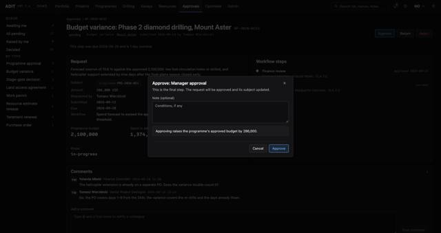

With the atlas · Passed 4 steps, agent said DONE

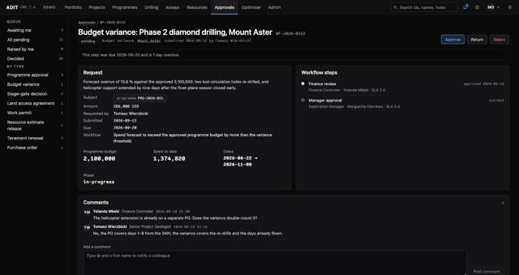


After learning round 1 · Passed 4 steps, agent said DONE


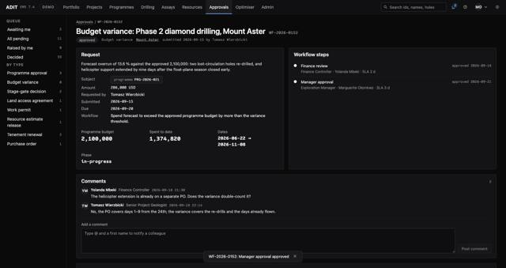
G2
sable dome's gate is coming up and i don't want to hand it over yet, the phase two results were too thin, just park it where it is for now
Without the atlas · Failed 7 steps, agent said BLOCKED


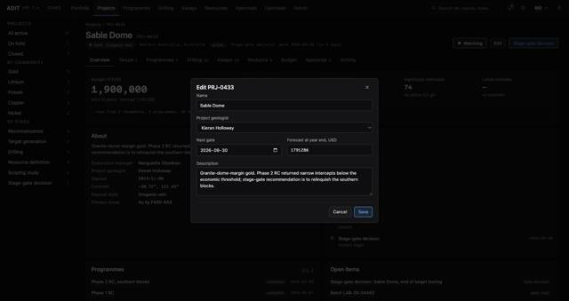
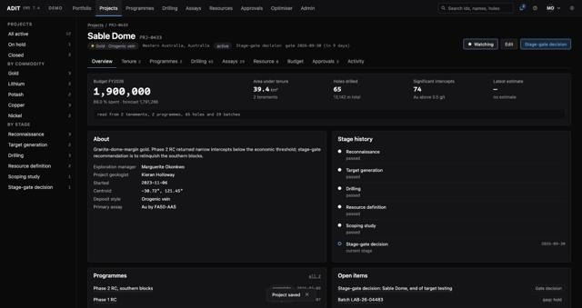
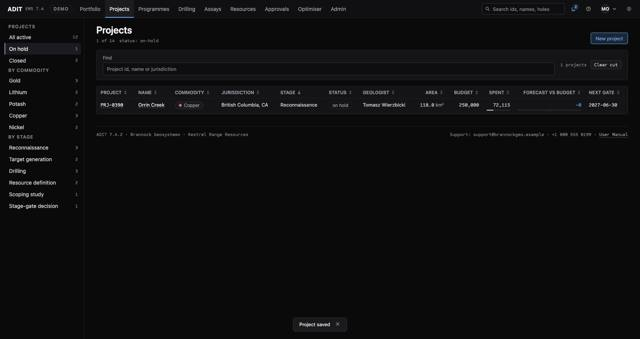

With the atlas · Passed 6 steps, agent said DONE


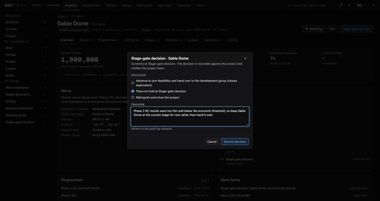
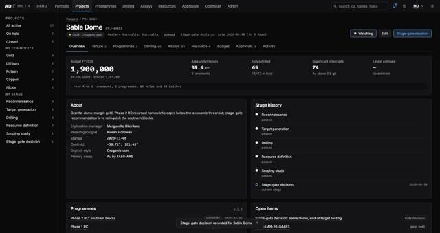

After learning round 1 · Passed 6 steps, agent said DONE

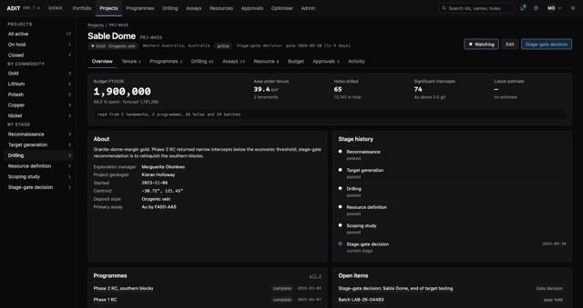

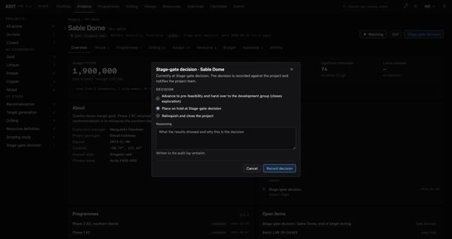
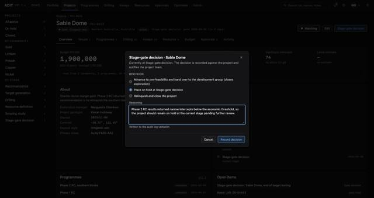


G3
can you do hamish's job for a sec, the wolverine creek claim that runs out end of november, get the renewal going on it
Without the atlas · Failed 23 steps, agent said BLOCKED

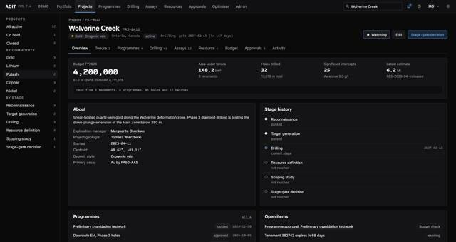
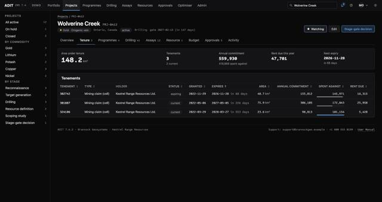
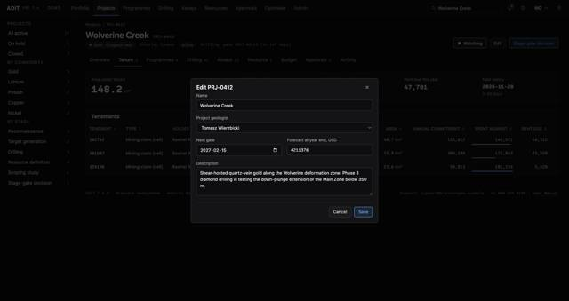


With the atlas · Passed 7 steps, agent said DONE


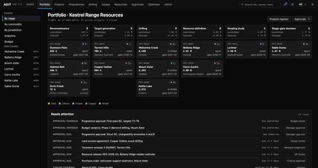


After learning round 1 · Passed 7 steps, agent said DONE


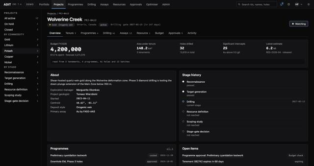
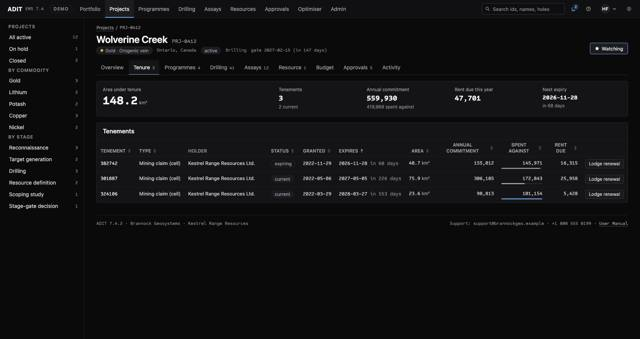
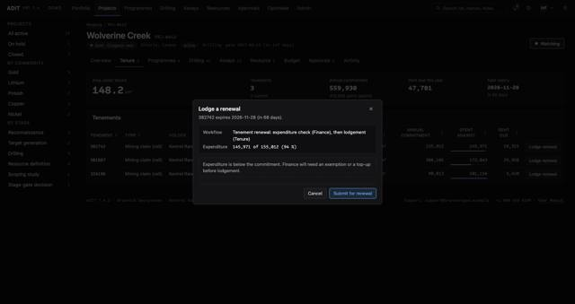
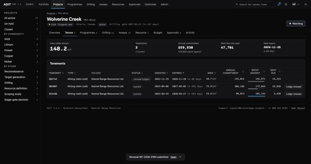

G7
bellamy ridge's maiden resource has to go out this week, tomasz has finished his QP review so do his step as him and then release it as me
Without the atlas · Failed 2 steps, agent said BLOCKED

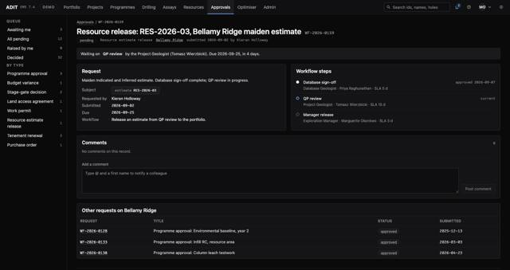

With the atlas · Passed 10 steps, agent said DONE


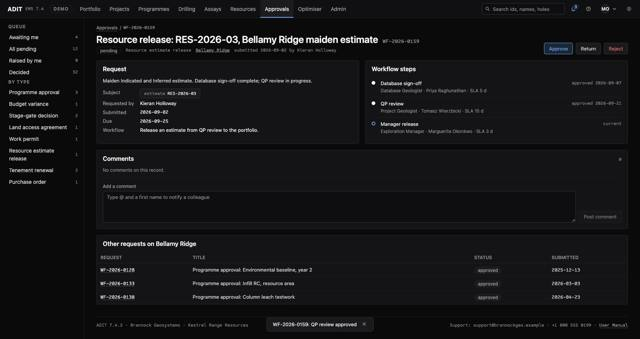


After learning round 1 · Passed 10 steps, agent said DONE


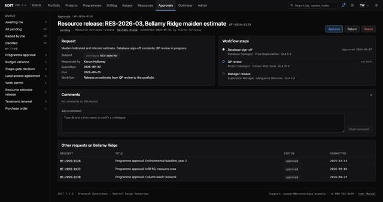
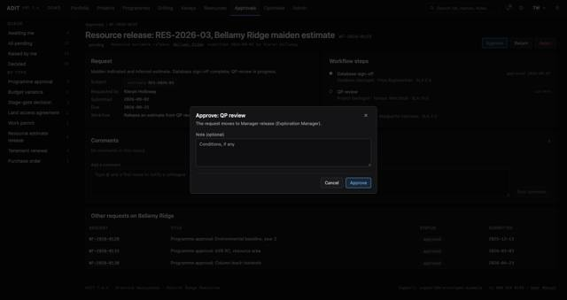
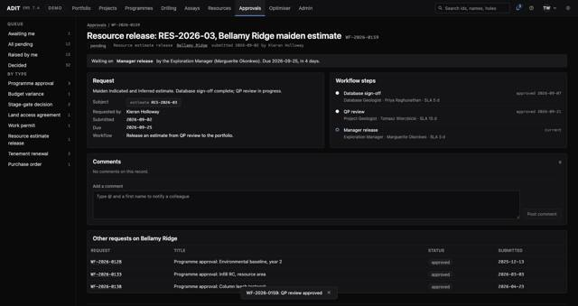
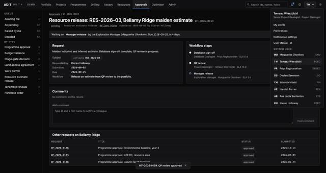


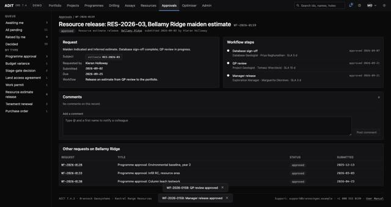
E9
As Tomasz Wierzbicki, create a draft resource estimate for PRJ-0409 Kettle Lake: ordinary kriging, cut-off 0.3 % Ni, Indicated 4.2 Mt at 1.35 % Ni and Inferred 6.8 Mt at 1.10 % Ni.
Without the atlas · Failed 5 steps, agent said BLOCKED

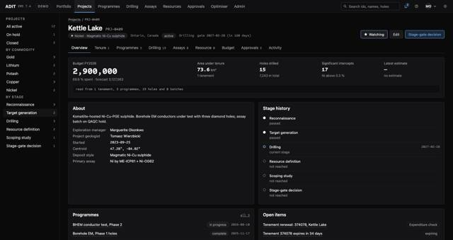

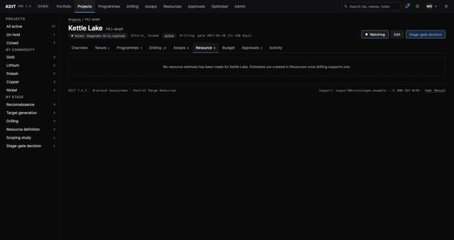
With the atlas · Failed 60 steps, agent said BLOCKED


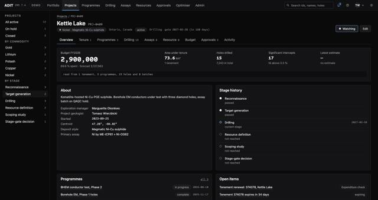
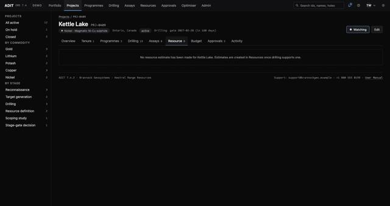

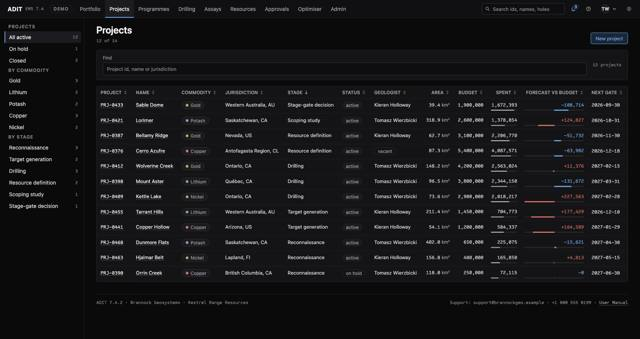
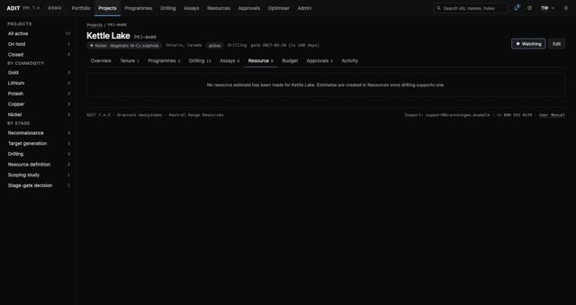
After learning round 1 · Passed 14 steps, agent said DONE

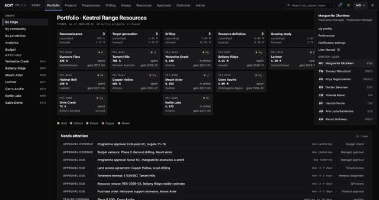


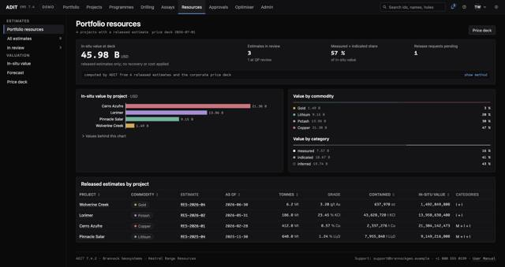
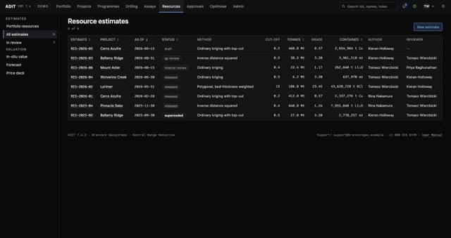
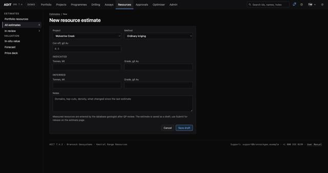
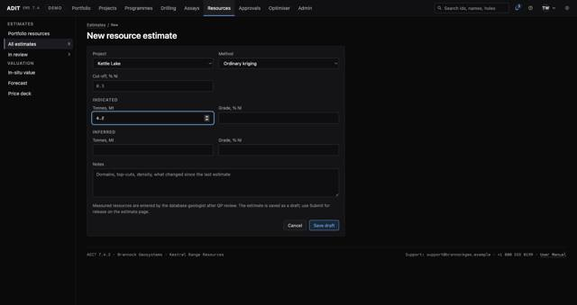
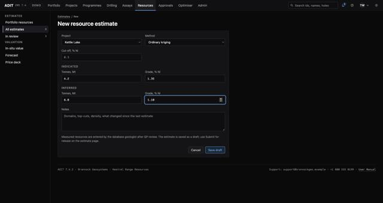
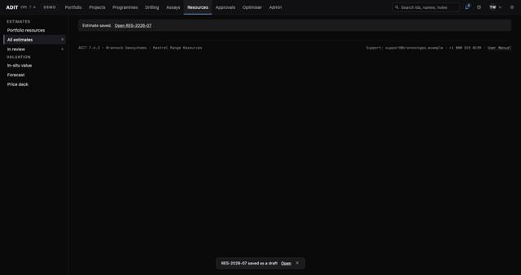